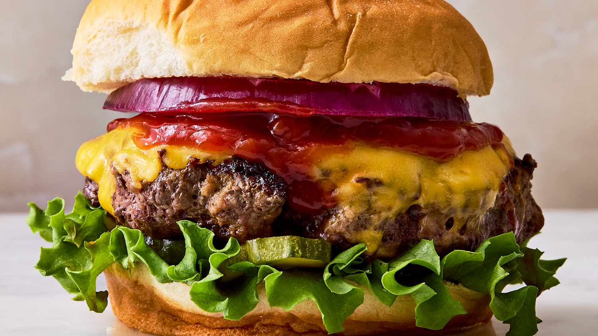

Hamburger

Description
A simple yet delicious hamburger meal made with beef, cheese, onion, egg, bread and of course sauce.
- bread
- ground beef
- onion
- cheese (of your choice)
- lettuce
- a egg
- pinch of salt and pepper
Steps
-
Gather all ingredients. Preheat an outdoor grill for high heat and lightly oil the grate.
- Meanwhile, combine ground beef, onion, cheese, egg,salt and pepper in a large bowl.
- Use your hands to form the mixture into 4 patties.
- Cook patties on the preheated grill until no longer pink in the center and the juices run clear, about 4 to
5 minutes per side.
- An instant-read thermometer inserted into the center should read at least 165 degrees F (74 degrees C).
Home